Analiza rješenja · JOI Spring Camp 2025 · Dan 1
Bitarovo putovanje 2
O ovom članku
Tekst je prijevod službene japanske prezentacije rješenja, preoblikovan u članak. Slajdovi su ugrađeni kao slike; natpis pod svakim slajdom je prijevod teksta na njemu. Dijelovi označeni kao trenerska napomena nisu u izvornoj prezentaciji — dodani su da popune korake koje slajdovi preskaču ili samo skiciraju.
Slajdovi
Zadatak
izvorni slajdovi 1–2
-
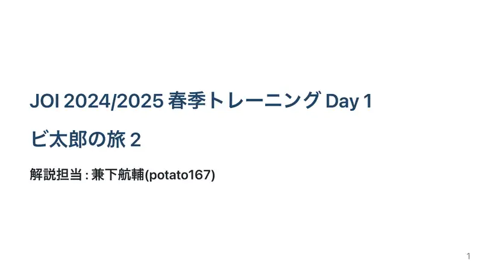
1Naslov; analiza: potato167. -
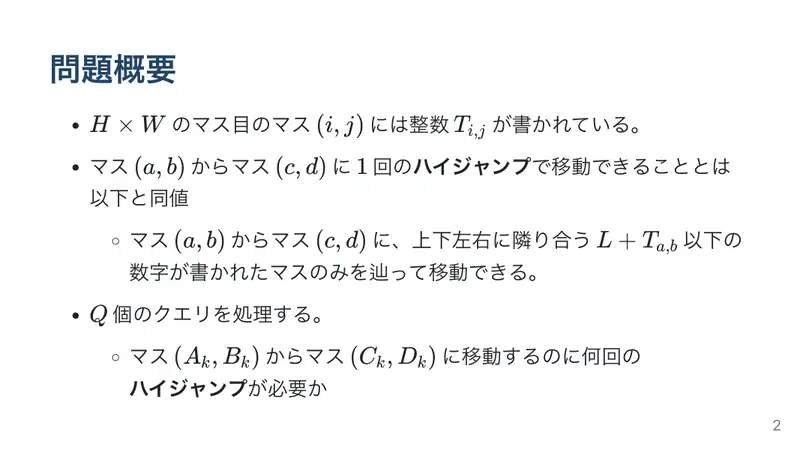
2Jedan skok iz $(a,b)$ u $(c,d)$ iff postoji put po susjednim poljima s vrijednostima $\le L+T_{a,b}$; $Q$ upita: broj skokova.
← → tipke ili klik na sliku
Podzadaci 1–3 50 bodova
Koraci algoritma
Grubo, greedy, fiksni start
izvorni slajdovi 3–8
-
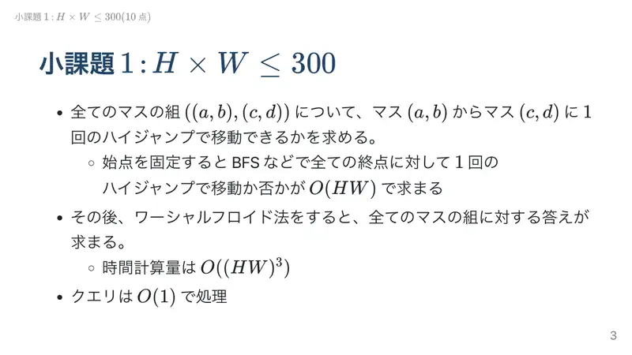
3$HW\le300$: za svaki start BFS daje dostižne u 1 skoku u $O(HW)$; Floyd–Warshall $O((HW)^3)$; upit $O(1)$. -
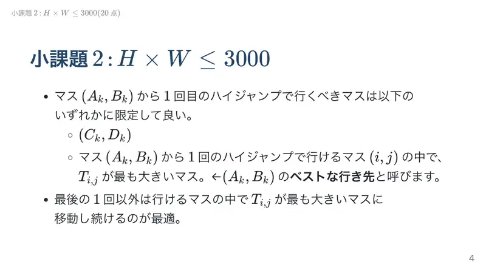
4$HW\le3000$: svaki skok osim zadnjeg ide na dostižno polje s najvećim $T$ — „najbolje odredište”. -
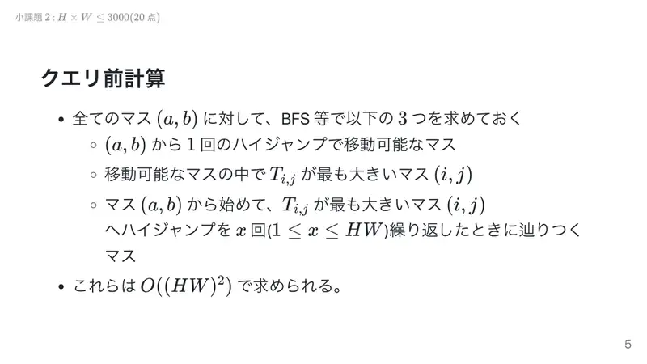
5Predračun za sva polja: dostižni skup, najbolje odredište, $\mathrm{best}^x$ za $1\le x\le HW$: $O((HW)^2)$. -
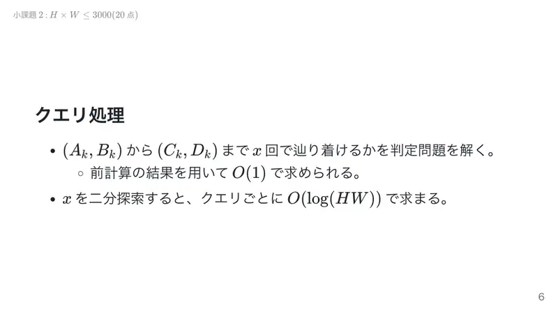
6Upit: „stiže li se u $x$ skokova” u $O(1)$ iz predračuna; binarna pretraga po $x$: $O(\log HW)$. -
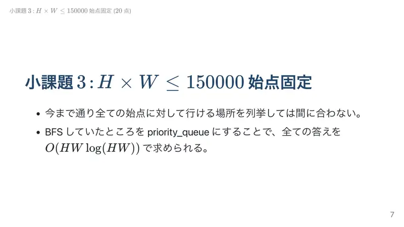
7Fiksni start: umjesto BFS-a priority_queue: sve odgovore u $O(HW\log HW)$. -
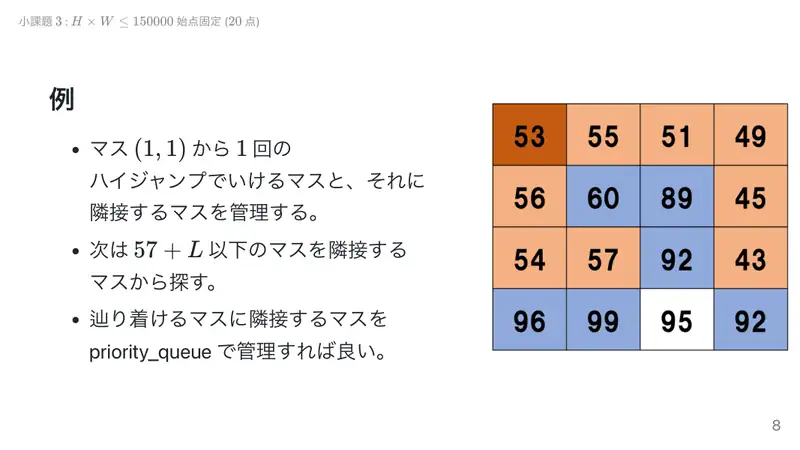
8Primjer: drži polja dostižna u $k$ skokova i njihove susjede u redu s prioritetom; sljedeći krug uzima susjede s $T\le57+L$.
← → tipke ili klik na sliku
Podzadatak 4 30 bodova
Koraci algoritma
Union-Find i dizanje
izvorni slajdovi 9–25
-
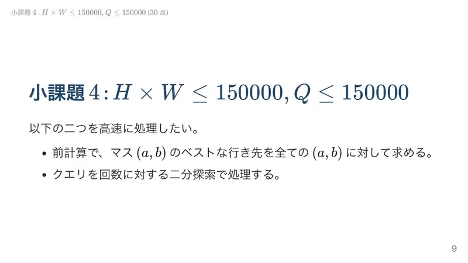
9Dvije zadaće: predračun $\mathrm{best}(a,b)$ za sve $(a,b)$; upiti binarnom pretragom po broju skokova. -
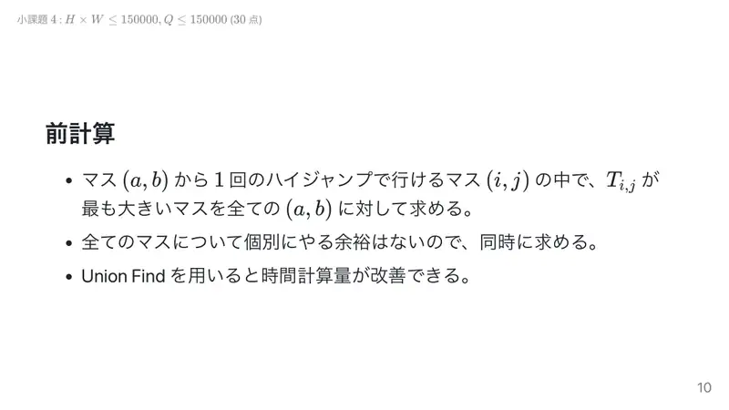
10Sve $\mathrm{best}$ istodobno Union-Findom. -
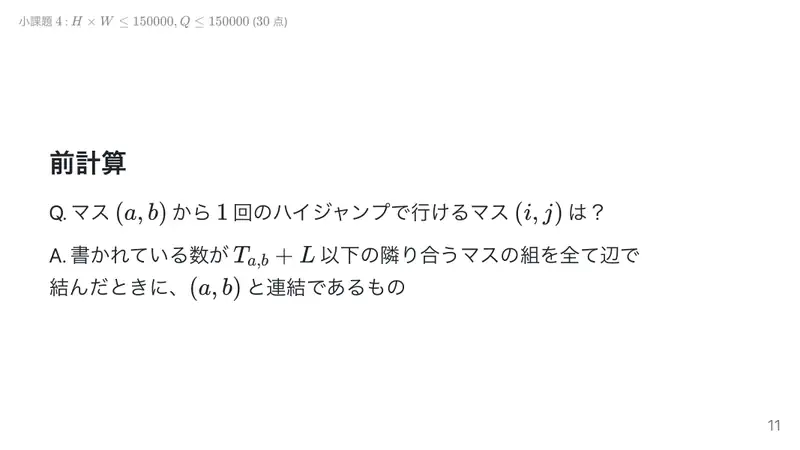
11Dostižni u 1 skoku iz $(a,b)$ = povezani s $(a,b)$ bridovima među susjedima s vrijednostima $\le T_{a,b}+L$. -
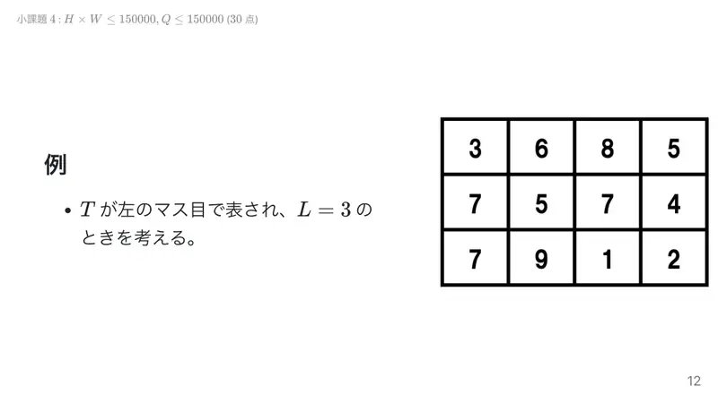
12Primjer mreže, $L=3$. -
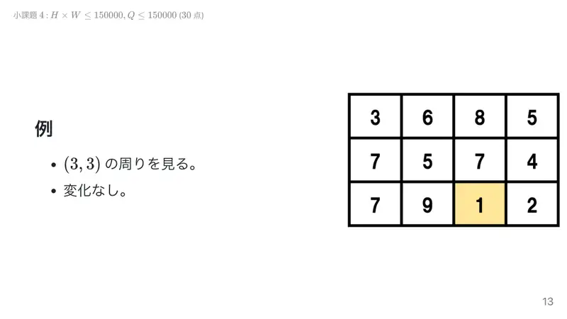
13Obradi $(3,3)$: bez promjene. -
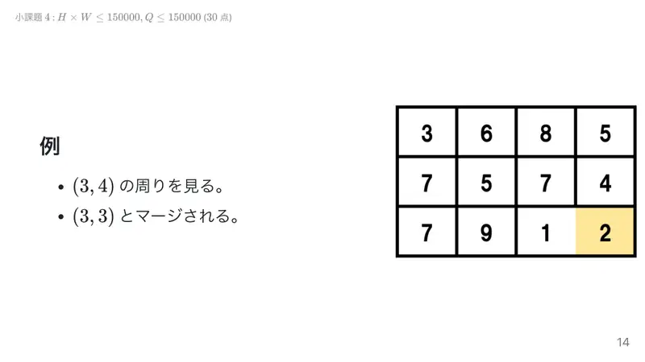
14Obradi $(3,4)$: spaja se s $(3,3)$. -
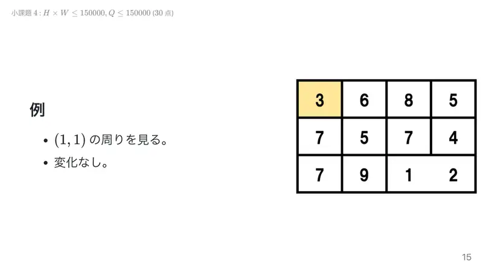
15Obradi $(1,1)$: bez promjene. -
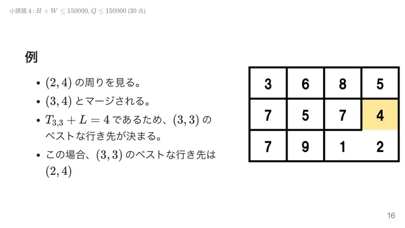
16Obradi $(2,4)$: spaja se s $(3,4)$; budući da je $T_{3,3}+L=4$ dosegnut, $\mathrm{best}(3,3)=(2,4)$. -
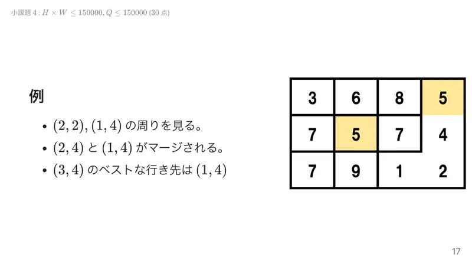
17Obradi $(2,2),(1,4)$: $(1,4)$ se spaja s $(2,4)$; $\mathrm{best}(3,4)=(1,4)$. -
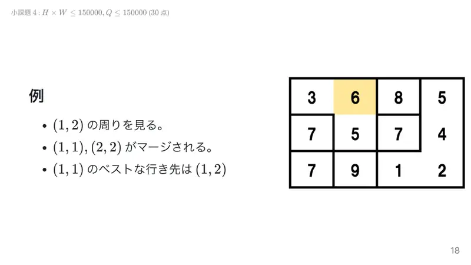
18Obradi $(1,2)$: spaja $(1,1),(2,2)$; $\mathrm{best}(1,1)=(1,2)$. -
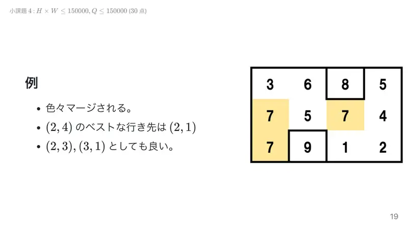
19Razna spajanja; $\mathrm{best}(2,4)$ može biti $(2,1)$ ili neko drugo s istim $T$. -
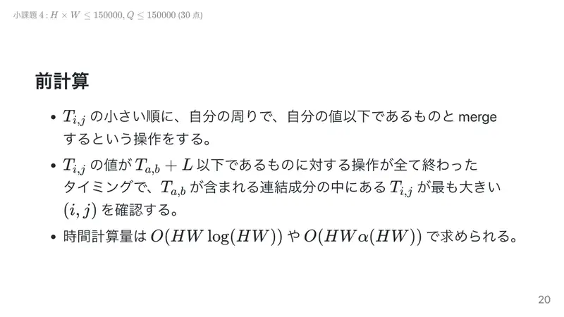
20Po rastućem $T$: spoji sa susjedima $\le$ sebi; kad su obrađena sva polja $\le T_{a,b}+L$, pročitaj max komponente od $(a,b)$. $O(HW\log HW)$ ili $O(HW\,\alpha)$. -
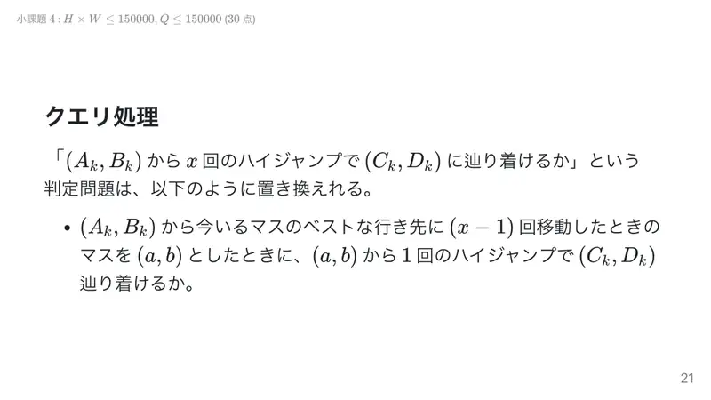
21Upit „$x$ skokova od $s$ do $t$”: neka je $(a,b)=\mathrm{best}^{x-1}(s)$; pitanje je stiže li se iz $(a,b)$ do $t$ u jednom skoku. -
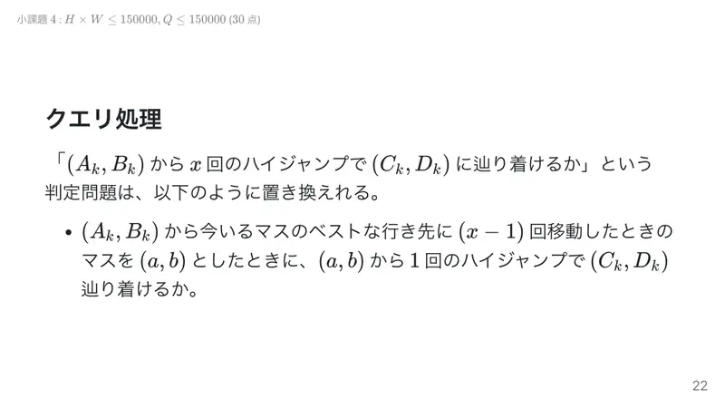
22Isto. -
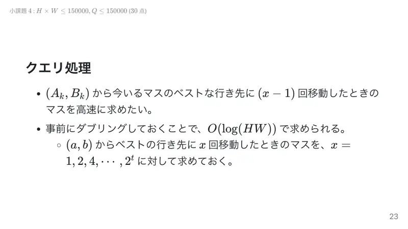
23$\mathrm{best}^{x-1}(s)$ binarnim dizanjem: tablice za $x=1,2,4,\dots$: $O(\log HW)$. -
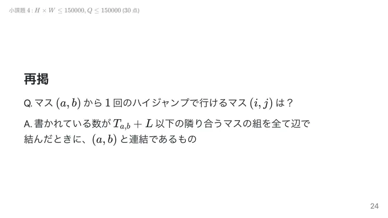
24Ponovno: jedan skok = povezanost pri pragu $T_{a,b}+L$. -
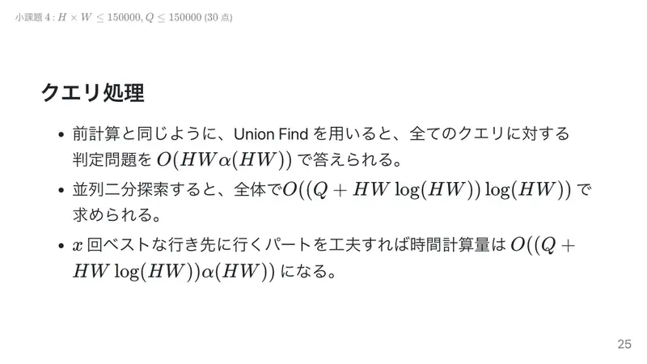
25Union-Find offline za sve provjere: $O(HW\,\alpha)$; s paralelnom binarnom pretragom ukupno $O((Q+HW\log HW)\log HW)$; pažljivije $O((Q+HW\log HW)\alpha)$.
← → tipke ili klik na sliku
Podzadatak 5 20 bodova
Koraci algoritma
Stablo spajanja i LCA
izvorni slajdovi 26–30
-
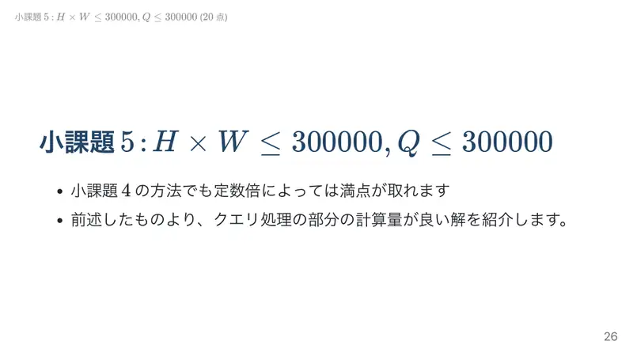
26Podzadatak 4 s dobrom konstantom prolazi; evo bržeg upita. -
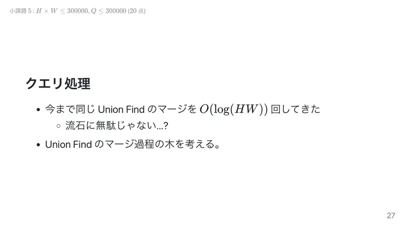
27Ponavljamo Union-Find spajanja $O(\log)$ puta — rasipno. Pogledaj stablo procesa spajanja. -
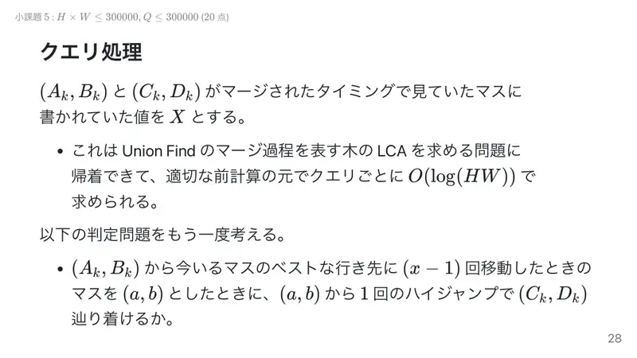
28$X$ = vrijednost polja koje se obrađivalo kad su $s$ i $t$ spojeni; to je LCA u stablu spajanja, $O(\log HW)$ (ili $O(1)$) po paru. -
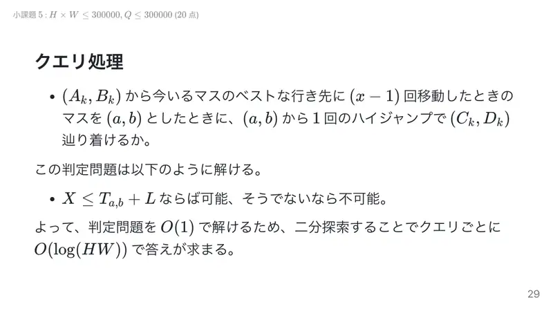
29Provjera: iz $(a,b)=\mathrm{best}^{x-1}(s)$ stiže se do $t$ iff $X((a,b),t)\le T_{a,b}+L$; $O(1)$ provjera, binarna pretraga → $O(\log HW)$ po upitu. -
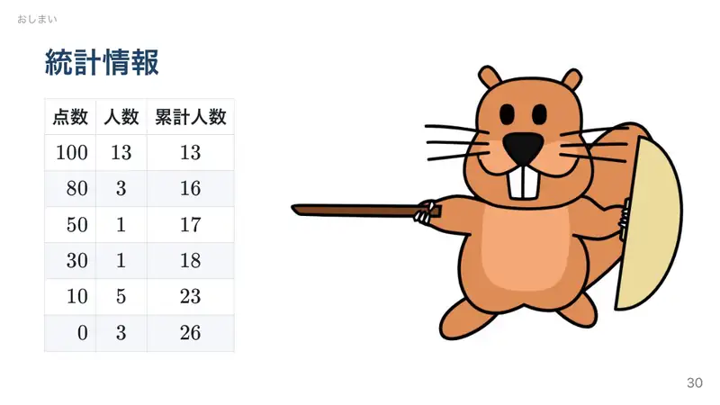
30Statistika: 100 — 13; 80 — 3; 50 — 1; 30 — 1; 10 — 5; 0 — 3.
← → tipke ili klik na sliku
Sažetak
- Skok = komponenta u pragovnom grafu; greedy na najviši dostižni vrh do predzadnjeg skoka.
- $\mathrm{best}$ za sve offline Union-Findom; $\mathrm{best}^{x}$ binarnim dizanjem.
- Povezanost pri pragu = LCA u Kruskalovu stablu; $O(\log HW)$ po upitu.